Win32DiskImagerを起動して、ファイルはxillinux-1.3.img(解凍済み)を指定します。

「Write」を押してイメージの書き込みスタート
このチュートリアルではXillinixの導入とデモアプリの実行を学びます。
XillinuxはXillybus社からリリースされているFPGA-ARM間の通信が可能な、Zedboard用のディストリビューションです。
FPGA－ARMプロセッサのデータのやり取り
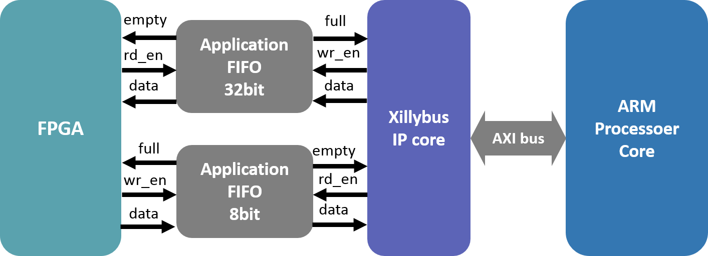
XillinuxにおけるARM-FPGA間の通信はまず、
ARMプロセッサ側(ソフトウェア側)ではデバイスファイルを介してFIFOにアクセスし、データを送受信します。
また、FPGA側ではFIFOに対してリード/ライト信号を制御して任意のタイミングでデータの読み書きができます。
実際の実装では、このFIFOのインスタンスを自身のFPGAの回路に導入してデータのやり取りを行います。
このセクションではZedboardへのXillinux導入の仕方を学びます。
FPGAの回路データとSDカードイメージをダウンロードします。
FPGAの回路 (xillinux-eval-zedboard-1.3c.zip)
SDカードイメージ (xillinux-1.3.img.gz)
SDカードへのイメージ書き込みは時間がかかるので始めにやっておきます。
Win32DiskImagerを起動して、ファイルはxillinux-1.3.img(解凍済み)を指定します。
「Write」を押してイメージの書き込みスタート
ダウンロードしたxillinux-eval-zedboard-1.3c.zipを
解凍、展開してください。解凍したファイルの中身は以下のようになっていると思います。
xillinux-eval-zedboard-1.3c
|--bootfoles : ブートファイル
|--cores : Xillybus IPのプリコンパイル済みのバイナリ
|--runonce : FIFOの回路データ
|--system : プロセッサ周りの配線データ
|--verilog : 回路のソースコード
|--vhdl : 回路のソースコード
|--vivado-essentials : 回路のソースコード
ここからはISEで回路を生成していきます。
まず、runonceに入っているsystem.xmpをダブルクリックしてXilinx Platform Studioを起動します。
Generate Netlistをクリック
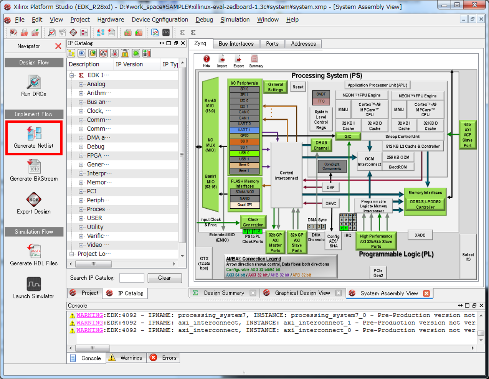
"XST completed"
Done!
のメッセージがコンソールに出たら終了です。
次はrunonceのrunonce.xiseをダブルクリックします。
ISE Project Navigatorが起動します。
その中のfifo_32x512、fifo_8x2048、vga_fifoについてそれぞれRegenerate Coreをしてください。
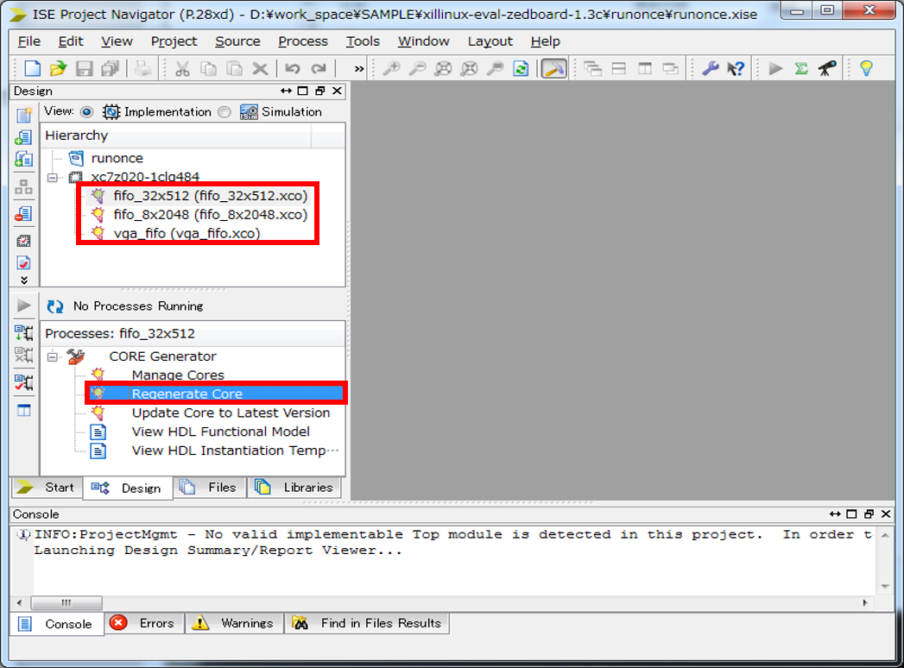
2.1、2.2の作業が終わりましたら、次は回路の論理合成です。
このtutorialではverilogを選びます。ほかにもvhdl、vivadoによる合成もできます。
verilogの中のxillydemo.xiseをダブルクリックするとISE Project Navigatorが起動します。
Generate Programming Fileをダブルクリックして論理合成を開始します。
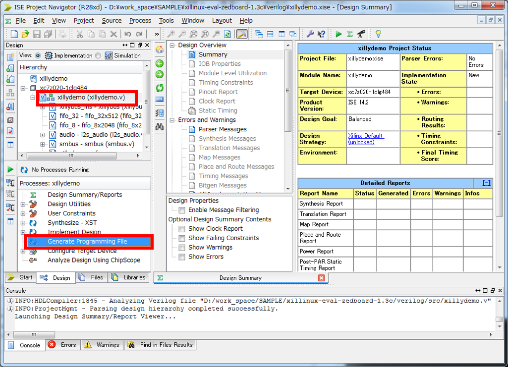
SDカードへのイメージ書き込みは終わっていましたら、SDカードをPCに挿しなおします。
エクスプローラーなどで中身を見てみると
uImageというファイルがあると思います。これがLinuxカーネルです。
さらにここへブートファイルと回路のビットストリームファイルを入れます。
まず、ブートファイルはxillinux-eval-zedboard-1.3cのなかの
bootfilesに入っています。なかにはboot.binとdevicetree.dtbというファイルが入っていますので
それをどちらもSDカードへコピーしてください。
また、回路のビットストリームファイルですが、先ほど行っていたxillydemo.xiseにおける
論理合成が終わるとverilogフォルダのなかにxillydemo.bitというファイルが出来ているはずです。
これもコピーしてください。最終的には以下のようなファイル構成になります。
SD_card
|-uImage
|-boot.bin
|-devicetree.dtb
|-xillydemo.bit
*すべてファイル
これでSDカードに必要なファイルが整いました。
システムの起動に移ります。
下記の写真を参考にしてUSBケーブル、イーサネットケーブル、SDカードを接続 or 挿入してください。
SDカードの向きには気をつけてください。また赤枠で囲まれている部分が写真と同じであることを確認してください。
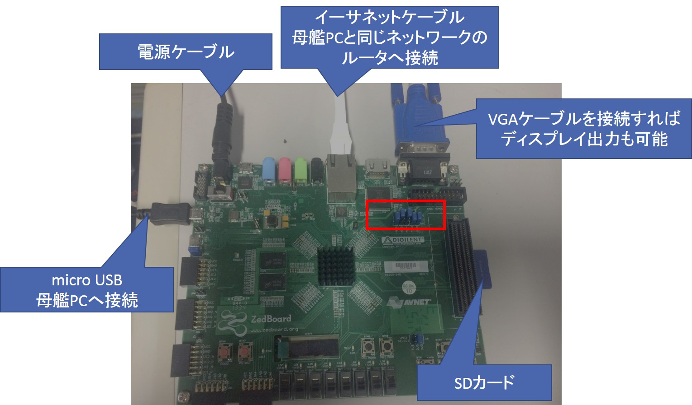
接続し終わったらスイッチをONにしてください。
ディスプレイを接続すればなんとGUIもしっかり出ます！！感動！
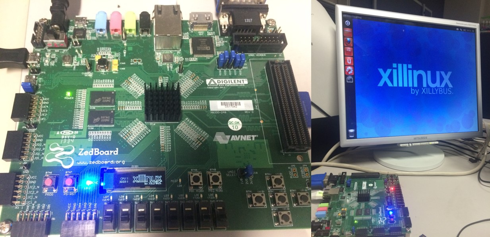
Zedboardにキーボードを接続して操作もできますが、何かと不便なので
母艦PCからシリアル接続してコンソールで操作できるようにしましょう。
ZedboardとPCをUSB接続するためのドライバインストーラをここからダウンロードしてください。ダウンロードにはユーザ登録が必要です。
無事インストールできたらコントロールパネルからは以下のように見えるはずです。
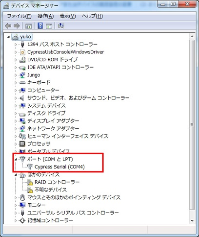
場合によってはCOMの番号は違うかもしれません。
スタートボタン > デバイスとプリンターを開いてください。
下に示すような状態になっていればOKです。もしなっていなければ
写真と違うほうのデバイスを右クリックして「トラブルシューティング」することで正常に認識する場合があります。
TeraTermを起動して設定 > シリアルポートから以下のように設定してください。
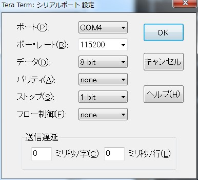
設定を保存してTeraTermを再起動します。するとキーボード入力が可能となります。
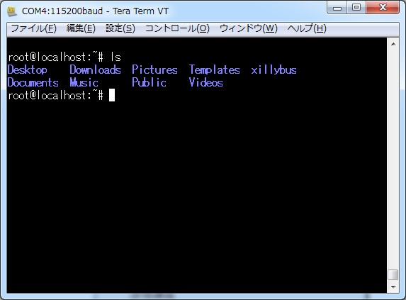
Ubuntuのネットワーク設定を行います。/etc/network/interfacesを
エディタで開き次のように設定します。
なお、固定IPを設定する場合はここを参照してください
auto lo
iface lo inet loopback
auto eth0
iface eth0 inet dhcp
もしプロキシを使用している場合は以下のコマンドでプロキシを設定してください。
export http_proxy="http://proxy.example.com:8080/"
export https_proxy="https://proxy.example.com:8080/"
export ftp_proxy="ftp://proxy.example.com:8080/"
export socks_proxy="socks://proxy.example.com:1080/"
また/etc/apt/apt.conf内に次の記述をしてください
Acquire::http::proxy "http://proxy.example.com:8080/";
Acquire::https::proxy "https://proxy.example.com:8080/";
Acquire::ftp::proxy "ftp://proxy.example.com:8080/";
Acquire::socks::proxy "socks://proxy.example.com:1080/";
リモートログインをするためにsshをインストールします。
まずはapt-get updateしてください。
apt-get update
その後、sshをインストールしましょう
apt-get install ssh
リモートログインするには先ほど開いたTeraTermを使用します。
ファイル > 新しい接続からTCP/IPを選択し、ホストアドレス(Zedboard側のアドレス)を指定してください。
OKを押すとリモートログインします。ログイン名とパスワードはどちらもrootです。
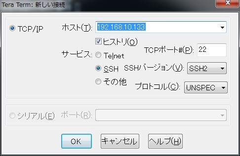
FPGA-ARMの通信は前述したとおり、ARM側からデバイスファイルにアクセスしFIFOへデータをプッシュします。
現在、シリアル接続しているコンソールとリモートログインしているコンソールの2つがあるかと思います。
まずは両方のコンソールでホームディレクトリ下にあるxillybus/demoappsに移動しましょう。
demoappsのなかにはサンプルプログラムが入っています。makeしましょう。
root@localhost:~# cd xillybus/demoapps/
root@localhost:~/xillybus/demoapps# ls
Makefile fifo.c memread.c memwrite.c streamread.c streamwrite.c
root@localhost:~/xillybus/demoapps# make
gcc -g -Wall -O3 memwrite.c -o memwrite
gcc -g -Wall -O3 memread.c -o memread
gcc -g -Wall -O3 streamread.c -o streamread
gcc -g -Wall -O3 streamwrite.c -o streamwrite
gcc -g -Wall -O3 -pthread fifo.c -o fifo
今回はstreamreadとstreamwriteを使います。
それぞれのコンソールで以下のコマンドを入力してください。リード側から起動してください。
コンソール1
root@localhost:~/xillybus/demoapps# ./streamread /dev/xillybus_read_32
#「32」を「8」にすると8bitのFIFOにアクセスできる
コンソール2
root@localhost:~/xillybus/demoapps# ./streamwrite /dev/xillybus_write_32
write側でキーボード入力をするとread側へその入力値が出力されます。
今回はFPGA側において、FIFOはユーザ回路をくっつけていない(なにも処理していない)ので
データはFIFOに入ったものがそのまま出てきているだけです。つまり、
ARM→FIFO→FPGA回路(今回は空)→FIFOのような順番でデータが流れています。
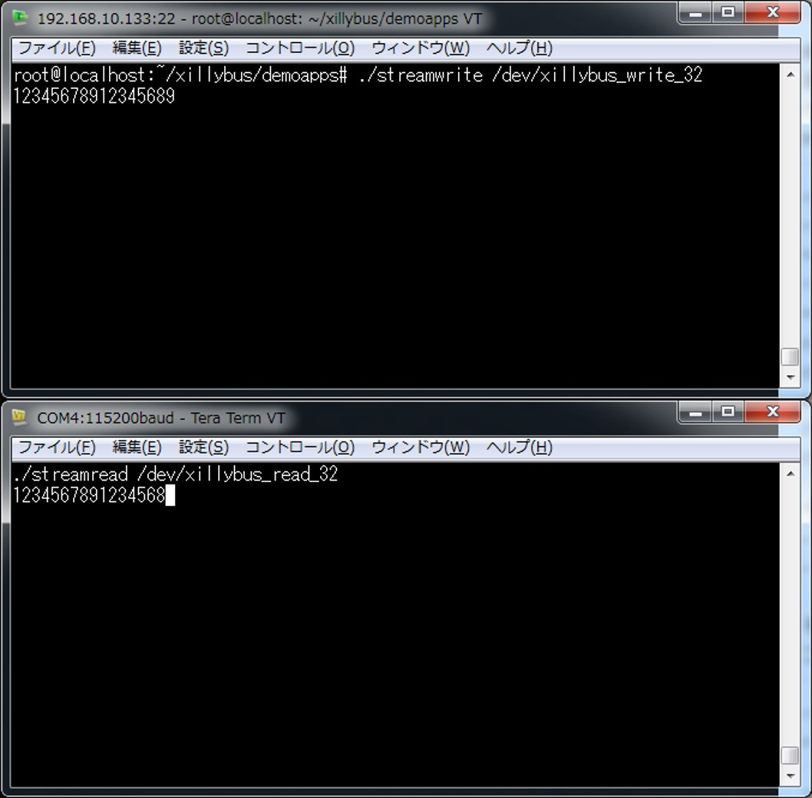
write側から入力した値がreadにそのまま出力すれば通信成功です。
なお、デモアプリのコード解説については他のtutorialで行います。
お問い合わせはkazushi@virgo.is.utsunomiya-u.ac.jpまで
Copyright (C) 2015 Kazushi Yamashina All Rights Reserved.